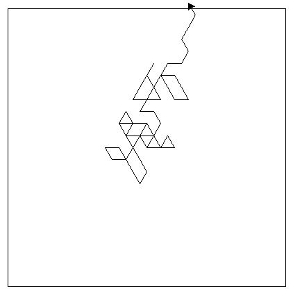

TP : marche aléatoire d’une tortue#
Le module random génère du hasard. La fonction randint(n,p) renvoie un nombre entier choisi aléatoirement entre les valeurs n et p compris.
Comme tout module, il faut importer les fonctions qui nous intéressent. Dans un nouveau fichier, ajouter la ligne d’import du module from random import randint
Créer un fichier
tortue_aleatoire.pyavec l’éditeur Thonny.Imoprter les modules
randometturtledans votre fichier Python:from random import randint from turtle import *
Exécuter votre fichier puis saisissez dans la console plusieurs fois l’instruction
randint(0,1). Quelles sont les valeurs renvoyées ?Quelle est l’instruction à écrire pour avoir 3 vleurs aléatoires ?
On veut simuler le lancer d’un dé cubique. Quelles instructions permettent de réaliser cette simulation ?
Marche aléatoire droite ou gauche#
On va dessiner la marche aléatoire de la tortue. Elle avance d’une certaine distance puis change de direction et avance à nouveau et ainsi de suite de façon aléatoire.
Créer les variables:
npour le nombre de déplacements de la tortue. On initialisen = 20.directionqui prend aléatoirement les valeurs 0 ou 1.
Selon la valeur de la variable
direction, la tortue va à droite ou à gauche. On parle de structure conditionnelle, soumise à la valeur d’une condition, d’un test.Si
directionest égale à 0, alors la tortue va à droite :right(90)Sinon la tortue va à gauche :
left(90).
Quel est le test à vérifier ?
Quelles sont les instructions à effectuer selon la valeur du test ?
Écrire un programme pour que la tortue avance de 20, choisisse aléatoirement sa direction à droite ou à gauche, puis avance à nouveau de 20.
Modifier votre code avec une boucle
forpour répéternfois la marche en avant de 20 puis le choix aléatoire de direction.
Marcher encore plus aléatoirement#
La tortue va aléatoirement à droite, tout droit ou à gauche. On a donc une structure conditionnelle avec 2 tests.
Écrire un code qui déplace la tortue aléatoirement à droite, tout droit ou à gauche.
La répétition de tests peut se faire plusieurs fois, autant de fois que nécessaire.
On imagine une tortue qui se déplace avec 4 possibilités de direction:
Écrire un code qui déplace la tortue aléatoirement en tenant compte des 4 directions.
{kind=link}
Pour finir, la tortue peut se déplacer dans 6 directions différentes comme le montre la figure ci-dessous:

Écrire un code qui déplace la tortue aléatoirement en tenant compte des 6 directions.
Marche aléatoire dans un espace contraint#
La tortue se déplace un nombre de fois fixé par la variable n. On souhaite que la tortue se déplace tant qu’elle vérifie une condition.
La fonction
position()renvoie les coordonnéesxetyde la position de la tortue.x,y = position()
Écrire une boucle qui déplace aléatoirement la tortue tant que la valeur de
yest supérieure ou égale à 0. Ne pas oublier de récupérer la position de la tortue à chaque itération!Transformer votre code pour que la tortue se déplace tant que la valeur de
xest inférieure à 100.On souhaite que la tortue se déplace tant que la variable
yest comprise entre -100 et 100.Comment écrit-on cette condition ?
Transformer votre code pour que la tortue respecte cette condition.
La tortue se déplace dans un carré centré en
(0,0)de côté défini par la variabledimension.Comment écrire la condition de la boucle ?
Écrire le code qui trace le carré centré de côté
dimension.Transformer votre code pour que la tortue se déplace à l’intérieur de ce carré.
La tortue a une marche aléatoire dans 4 directions : N, O, S et E.
Elle se déplace dans un espace carré de côté 200 centré en
(0,0). Écrire un code qui restreint les déplacements de la tortue dans cet espace.Lorsqu’elle elle sort à l’est, elle réapparait à l’ouest et poursuit sa marche
Lorsqu’elle elle sort à l’ouest, elle réapparait à l’est et poursuit sa marche
Lorsqu’elle elle sort au nord, elle réapparait au sud et poursuit sa marche
Lorsqu’elle elle sort au sud, elle réapparait au nord et poursuit sa marche
Ci-dessous, le tracé de la marche aléatoire avec 3000 déplacements:
{kind=link}
{kind=link}
{kind=link}